基本概念：小波变换就是用一组不同频率的short kernel（wavelet）和原始信号进行卷积，因此信号只需要在wavelet的长度上稳定（stationary）
和傅立叶变换相似的是，如果信号的频率和小波的频率接近，则点乘（dot product）得到的结果幅值越大
小波卷积可以当作带通滤波器（band-pass filter）使用。
卷积核
Wavelet的类型
小波变换的卷积核（wavelet）有很多种类型，不同的类型会影响时间分辨率（temporal precision）。通常我们使用最多的是高斯核（Morlet Wavelet）
Wavelet的种类：https://www.mathworks.com/help/wavelet/gs/introduction-to-the-wavelet-families.html
小波族Wavelet Family
定义：我们将同一种类型，但不同频率的一组小波叫做family
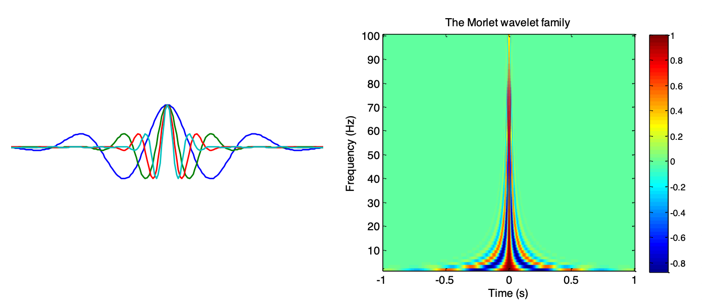
Morlet wavelet在时域上表现为外部为高斯函数的包络面，内部为正弦函数。而在频域上则表现为高斯函数，且峰值在wavelet 的频率f上。
Real-valued Morlet Wavelet
数学公式：
a sin 2 π f t ∗ a e − t 2 / ( 2 s 2 ) a\sin 2\pi ft * a e^{-t^2/(2s^2)}
a sin 2 π f t ∗ a e − t 2 / ( 2 s 2 )
Q：如何构建Morlet wavelet？
构建一个正弦波（sine wave），并和Gaussian window相乘，得到Morlet wavelet。需要注意的是，Gaussian window和sine wave的采样频率（sampling frequency）和点的数量。
Q：具体的公式是什么呢？
正弦波公式：a sin 2 π f t a\sin 2\pi ft a sin 2 π f t
Gaussian公式：a e − t 2 / ( 2 s 2 ) a e^{-t^2/(2s^2)} a e − t 2 / ( 2 s 2 ) s = n 2 π f s=\frac{n}{2\pi f} s = 2 π f n
Wavelet公式：a sin 2 π f t ∗ a e − t 2 / ( 2 s 2 ) a\sin 2\pi ft * a e^{-t^2/(2s^2)} a sin 2 π f t ∗ a e − t 2 / ( 2 s 2 )
n是wavelet cycles，表示temporal precision和frequency precision的折中（trade-off），f是wavelet的频率。
Q：应该如何选择频率和cycle呢？
最低频率：理论下限为1倍的epoch对应频率，但通常选择4倍的epoch对应频率。如1s的epoch，起码选择4Hz作为wavelet frequency
最高频率：理论上限为奈奎斯特频率（Nyquist frequency），但通常保证每个cycle里面有四个采样点。如500Hz的采样频率，最多选择125Hz作为wavelet frequency
wavelet family数量：一般选择20-30个不同的频率。如EEG的cognitive task我们通常选择4-60Hz。
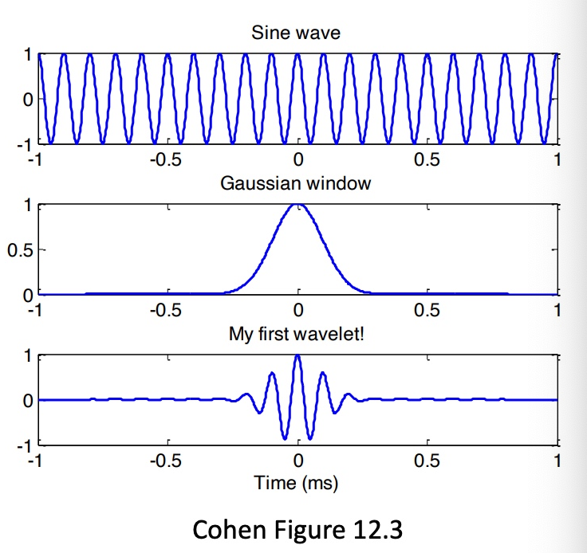
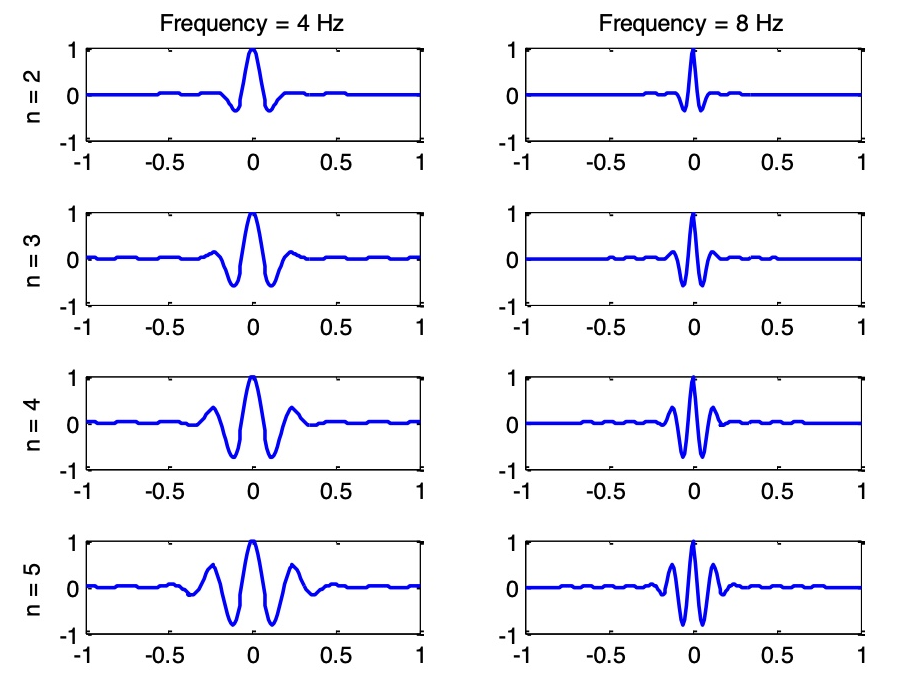
Q：real-valued wavelet存在什么问题吗？
和傅立叶变换一样，纯实数构成的卷积核要求原始信号和卷积核的相位（phase）相同。因此我们引入complex-valued wavelet
代码
！练习
假设我有一个60s长的采样频率为100Hz的信号，我想要进行wavelet convolution，则代码应该如何编写？
Maltab
1 2 3 4 5 6 7 8 9 10 11 12 13 14 15 16 17 18 19 20 21 22 23 24 25 26 27 28 29 30 31 32 fs = 100 ; wTime = -1 :(1 /fs):0.99 ; wFreq = 1 :2 :25 ; n = 4 ; wLength = length (wTime); dataTime = -10 :(1 /fs):10 ; data = sin (2 *pi *4 *dataTime); data = [zeros (1 ,wLength/2 ) data zeros (1 ,wLength/2 )]; wavelet_conv = zeros (length (wFreq),length (dataTime)); for i = 1 :length (wFreq) f = wFreq(i ); s = n/(2 *pi *f); wavelet = cos (2 *pi *f*wTime).*exp (-(wTime.^2 )/(2 *s^2 )); kernel = fliplr (wavelet); conv_result = conv(data,kernel,'same' )/sum(kernel); wavelet_conv(i ,:) = conv_result(wLength/2 :wLength/2 +length (dataTime)-1 ); end figure ;imagesc(dataTime, wFreq, wavelet_conv) colormap("jet" ) colorbar xlabel('time' ) ylabel('frequency' )
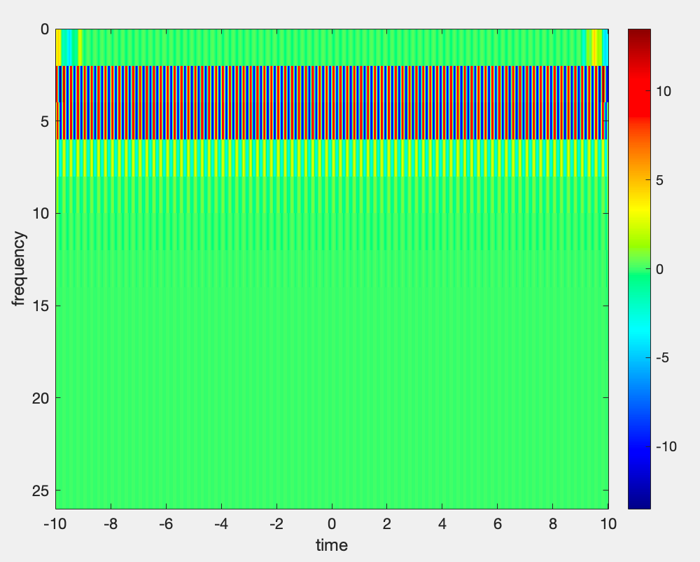
Python
1 2 3 4 5 6 7 8 9 10 11 12 13 14 15 16 17 18 19 20 21 22 23 24 25 26 27 28 29 30 31 32 33 34 import numpy as npimport matplotlib.pyplot as pltfs = 100 wTime = np.arange(-1 , 1 , 1 /fs) wFreq = np.arange(1 , 26 , 2 ) n = 4 wLength = len (wTime) dataTime = np.arange(-10 , 10 , 1 /fs) data = np.sin(2 *np.pi*4 *dataTime) data = np.concatenate((np.zeros(wLength//2 ), data, np.zeros(wLength//2 ))) wavelet_conv = np.zeros((len (wFreq), len (dataTime))) for i in range (len (wFreq)): f = wFreq[i] s = n/(2 *np.pi*f) wavelet = np.cos(2 *np.pi*f*wTime) * np.exp(-(wTime**2 )/(2 *s**2 )) kernel = np.flip(wavelet) conv_result = np.convolve(data, kernel, 'same' )/np.sum (kernel) wavelet_conv[i, :] = conv_result[wLength//2 :wLength//2 +len (dataTime)] plt.figure() plt.imshow(wavelet_conv, aspect='auto' , extent=[min (dataTime), max (dataTime), max (wFreq), min (wFreq) ], cmap='jet' ) plt.colorbar() plt.xlabel('time' ) plt.ylabel('frequency' ) plt.show()
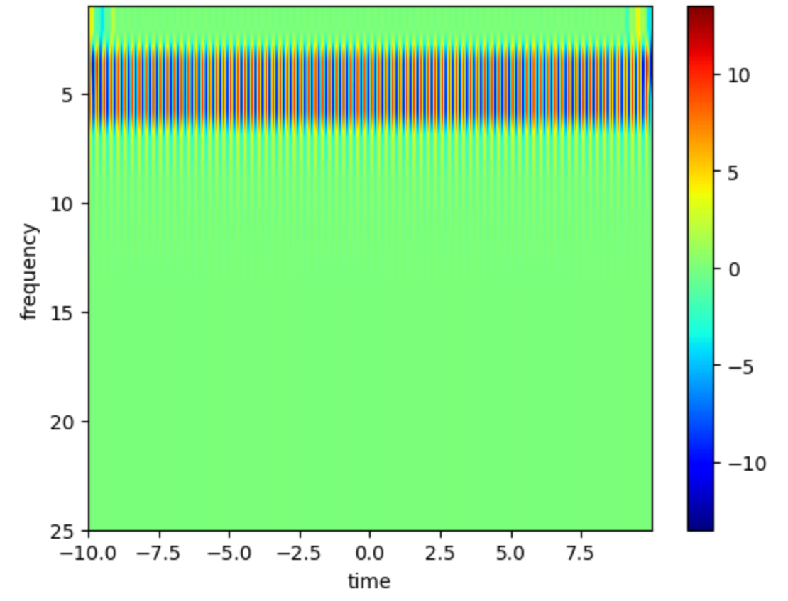
Complex-valued Morlet Wavelet
数学公式：
A e − t 2 / 2 s 2 e i 2 π f t where A = 1 ( s π ) 1 / 2 Ae^{-t^2/2s^2}e^{i2\pi ft} \quad \text{where} A=\frac{1}{(s\sqrt{\pi})^{1/2}}
A e − t 2 / 2 s 2 e i 2 π f t where A = ( s π ) 1 / 2 1
左侧部分是Gaussian，右侧部分是complex sinnsoid。
Q：complex wavelet是什么？
complex wavelet的实数部分，虚数部分和三维空间图如下
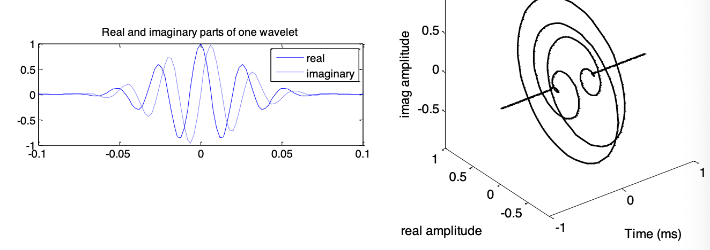
Q：卷积的结果怎么看？
complex wavelet convolution卷积结果是在复平面的向量。
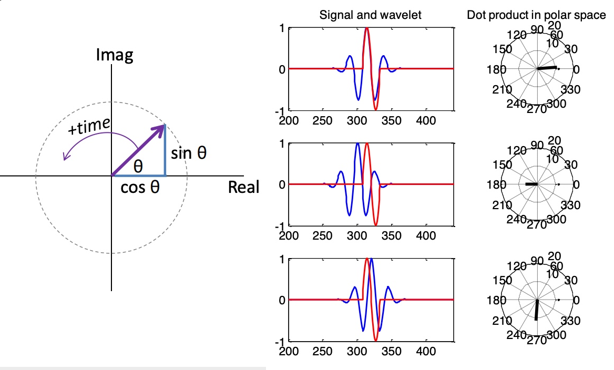
complex vector的幅值（magnitude） 表示signal在wavelet frequency上功率（power）如何随着时间变化（不受phase影响）
complex vector的角度（phase） 表示wavelet和signal的相位关系
complex vector的实数部分（real part）是信号经过band-pass filter之后的结果
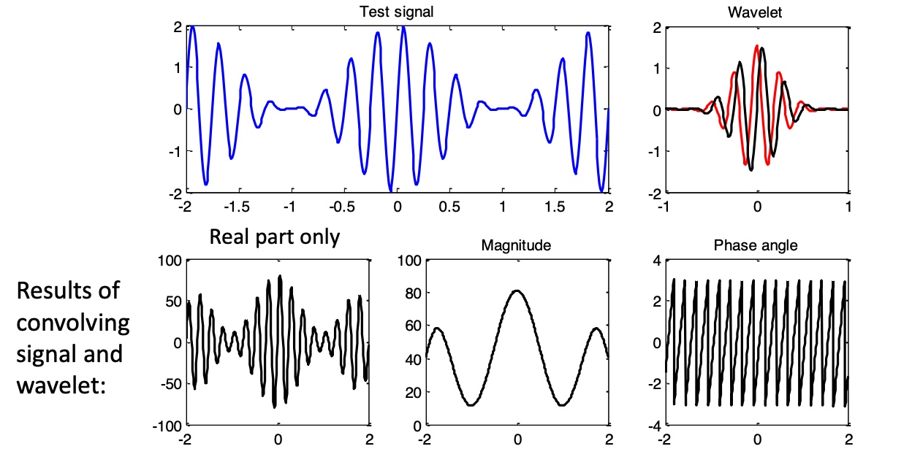
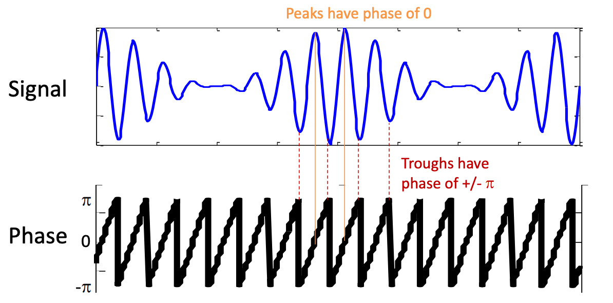
Q：如何选择wavelet的参数？
number of cycles n：n决定了wavelet的宽度。n越大，频率分辨率（frequency precision）越好，空间分辨率（temporal precision）越差。
通常情况下，如果想要研究瞬时变化（transient），我们通常会选择3-4 个cycle，想要研究频率变化，我们一般会选择7-10个cycle。当然我们也可以在不同的频率上面使用不同的cycle 数目。
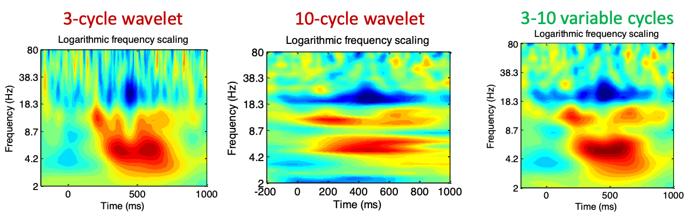
y-axis的刻度（scaling）：
指数logarithmic坐标轴可以凸显出低频区间
线性linear坐标轴可以凸显出高频区间
number of frequency：
频率的数量越多，则出来的结果分辨率越高，但是当频率高到一定程度之后，再增加频率数量则没啥太大意义。
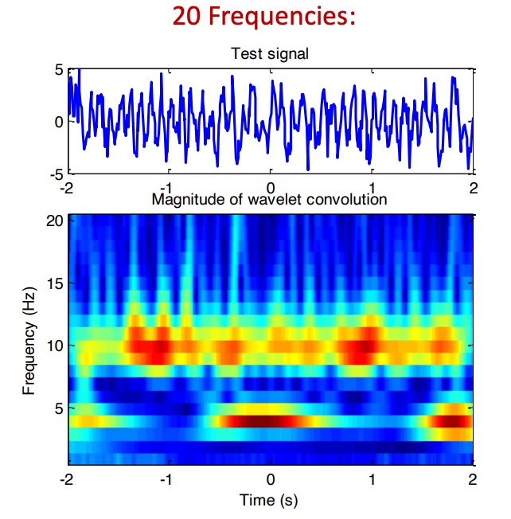
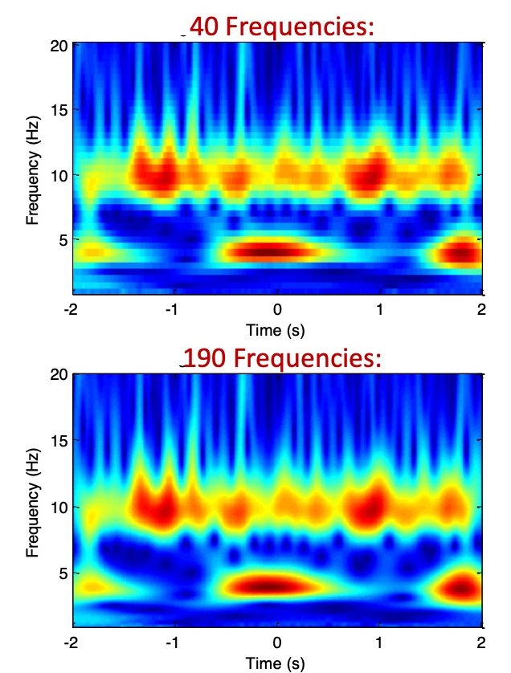
length of wavelet：长度保证两端可以趋近为0，没有最大长度限制。要求wavelet的中间在t=0处，且采样频率（sampling rate）和信号的一致。
代码
！练习
假设我有一个60s长的采样频率为100Hz的信号，我想要进行complex-based wavelet convolution，则代码应该如何编写？
Maltab
1 2 3 4 5 6 7 8 9 10 11 12 13 14 15 16 17 18 19 20 21 22 23 24 25 26 27 28 29 30 31 32 33 34 35 fs = 100 ; wTime = -1 :(1 /fs):0.99 ; wFreq = 1 :2 :25 ; n = 4 ; wLength = length (wTime); dataTime = -10 :(1 /fs):10 ; data = sin (2 *pi *4 *dataTime); data = [zeros (1 ,wLength/2 ) data zeros (1 ,wLength/2 )]; wavelet_conv = zeros (length (wFreq),length (dataTime)); for i = 1 :length (wFreq) f = wFreq(i ); s = n/(2 *pi *f); A = 1 /((s*sqrt (pi ))^0.5 ); wavelet = A.*exp (-(wTime.^2 )/(2 *s^2 )).*exp (1 i *2 *pi *f.*wTime); kernel = fliplr (wavelet); conv_result = conv(data,kernel,'same' ); wavelet_conv(i ,:) = conv_result(wLength/2 :wLength/2 +length (dataTime)-1 ); end figure ;imagesc(dataTime, wFreq, abs (wavelet_conv)) colormap("jet" ) colorbar xlabel('time' ) ylabel('frequency' )
Python
1 2 3 4 5 6 7 8 9 10 11 12 13 14 15 16 17 18 19 20 21 22 23 24 25 26 27 28 29 30 31 32 33 34 35 import numpy as npimport matplotlib.pyplot as pltfs = 100 wTime = np.arange(-1 , 1.01 , 1 /fs) wFreq = np.arange(1 , 26 , 2 ) n = 4 wLength = len (wTime) dataTime = np.arange(-10 , 10.01 , 1 /fs) data = np.sin(2 *np.pi*4 *dataTime) data = np.concatenate((np.zeros(wLength//2 ), data, np.zeros(wLength//2 ))) wavelet_conv = np.zeros((len (wFreq), len (dataTime))) for i in range (len (wFreq)): f = wFreq[i] s = n/(2 *np.pi*f) A = 1 /np.sqrt(s*np.sqrt(np.pi)) wavelet = A * np.exp(-(wTime**2 )/(2 *s**2 )) * np.exp(1j *2 *np.pi*f*wTime) kernel = np.flip(wavelet) conv_result = np.convolve(data, kernel, 'same' ) wavelet_conv[i, :] = conv_result[wLength//2 :wLength//2 +len (dataTime)] plt.figure() plt.imshow(np.abs (wavelet_conv), aspect='auto' , extent=[min (dataTime), max (dataTime), max (wFreq), min (wFreq)], cmap='jet' ) plt.colorbar() plt.xlabel('time' ) plt.ylabel('frequency' ) plt.show()
后续分析
使用real(wavelet_conv) = 投射到实数轴的结果 = 经过带通滤波器
使用abs(wavelet_conv) = 向量的幅值（magnitude）= 数据在wavelet frequency上面的power大小
使用angle(wavelet_conv) = 向量的角度（angle）= 数据的相对于某个时间点的wavelet的phase angle
可以使用FFT → 相乘 → IFFT替代卷积conv来提高运算效率